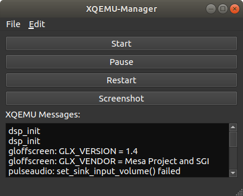
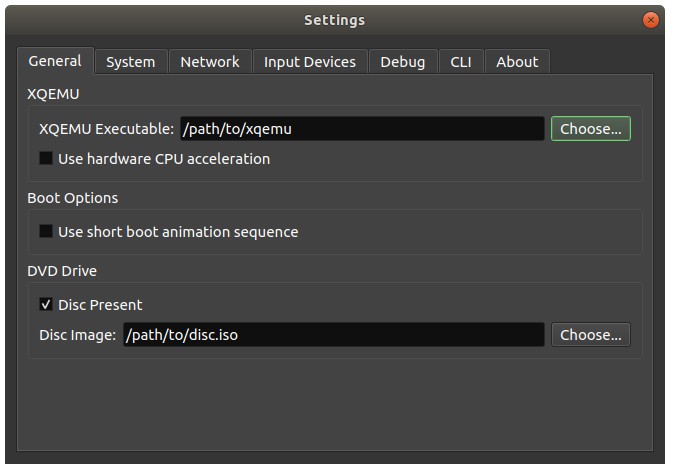

Getting Started
Getting XQEMU¶
Download for Windows: If you have a GitHub account, the latest pre-built release version of XQEMU for Windows can be downloaded here.
Linux and macOS users will need to build XQEMU from source, see Building XQEMU from Source.
Required Files¶
XQEMU is a low-level, full-system emulator which emulates the actual hardware of the Xbox; this means that in order to actually run XQEMU, you must have a copy of the stuff that a real Xbox needs when it turns on:
- The MCPX Boot ROM image
- The flash ROM image (aka BIOS)
- A properly-formatted hard disk drive image
- Game disc image(s)
Unfortunately, distributing some of these items would violate copyright laws, so you'll need to acquire them on your own.
Attention
The XQEMU project does not endorse or promote piracy. We don't link to copyrighted files, or discuss how to acquire them. The only legal way to acquire these files is to dump them from your real, physical Xbox. Please don't ask us how to get them.
MCPX Boot ROM Image¶
MD5 (mcpx_1.0.bin) = d49c52a4102f6df7bcf8d0617ac475ed
If your MCPX dump has an MD5 of 196a5f59a13382c185636e691d6c323d, you dumped
it badly and it's a couple of bytes off. It should start with 0x33 0xC0 and end
with 0x02 0xEE.
Flash ROM Image (aka BIOS/Kernel)¶
Xbox 1.0 compatible BIOS (cromwell, 4034, 4036, ...). You can use a retail or debug image. Just like a real Xbox, running an unmodified retail BIOS will not allow booting unofficial software.
People have reported most success using the modified "COMPLEX 4627" BIOS (retail version).
Hard Disk Drive Image¶
You have options:
Option 1: Use a pre-built Xbox HDD image (recommended)¶
You can use a pre-built 8G Xbox HDD image, free of any copyrighted content, and only containing a dummy dashboard. You can download this image from here!
Note
By design, this particular drive image does not contain the official Xbox dashboard, but instead contains only a dummy dashboard. Because of this, you may see an error message when starting XQEMU with an unmodified retail BIOS image due to the system failing to find a properly signed dashboard.
If you would like to change your dashboard (perhaps to the official retail dashboard, or any alternative dashboard), or copy additional files over to the Xbox HDD, you can start XQEMU, using a modified BIOS image, and a disc containing an alternative dashboard. Then you can either install that dashboard, or connect to XQEMU using FTP to transfer your desired dashboard files to the HDD.
Option 2: Image your real Xbox HDD¶
This is the most authentic way to do it. Unlock your drive, connect it to a
computer, and dd the entire contents of the drive straight to a file. This
file can be used as-is with XQEMU.
Option 3: Build a new HDD image from scratch¶
You can also create an Xbox hard-disk image using XboxHDM. Directions on how to do this can be found here.
Running XQEMU¶
XQEMU is launchable via the command-line interface, or through the XQEMU-Manager GUI.
Using XQEMU-Manager¶
XQEMU-Manager is a simple application with a graphical interface that allows you to easily configure, launch, and control XQEMU. Currently it is distributed separately from the main XQEMU executable. A binary distribution of XQEMU-Manager for Windows is available here.
Upon starting XQEMU-Manager, you will be presented with the following interface:

You will need to edit your configuration to let XQEMU-Manager know where XQEMU is located, and where to find the files described above. Navigate to Edit→Settings and you will be presented with the following dialog:

After configuring your settings, close the settings dialog and click the Start button to launch XQEMU.
Using the Command-Line Interface¶
You can launch with the following command:
./i386-softmmu/qemu-system-i386 \
-cpu pentium3 \
-machine xbox,bootrom=$MCPX \
-m 64 \
-bios $BIOS \
-drive index=0,media=disk,file=$HDD,locked \
-drive index=1,media=cdrom,file=$DISC \
-usb -device usb-xbox-gamepad
Of course, on Windows the executable path will have a .exe extension. If launching
a pre-built binary, replace ./i386-softmmu/qemu-system-i386 with
xqemu.exe.
Replace the variables $MCPX, $BIOS, $HDD, and $DISC with the appropriate
file paths or define them as variables in your shell.
The Xbox boot animation sequence can be bypassed by adding the
,short-animation option to the -machine switch above.